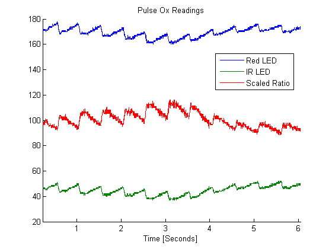

sha • rang
An electrical engineering student in NYC excited about using technology to build better user experiences.
Autonomous Mobile Cockroach
Cockroaches are a resilient species that could provide assistance to humans in numerous hazardous scenarios such as emergency rescues and nuclear disasters. By outfitting cockroaches with the appropriate control mechanisms and sensing equipment we can increase the effec tiveness of such cockroach “biobots.” A procedure for applying stimulation to cockroaches as a means to control movement was designed and tested. A prototype system was implemented using an Arduino Uno and basic electronic components. By exploring more natural stimulation methods, we can design systems to better employ unmanned autonomous cockroaches (UACs) to aid humans.
read more
Detection Algorithms for Stochastic Processes
The purpose of detection is to be able to separate information-bearing patterns from random patterns that distract from the transfer of information. Depending on the amount of distracting noise and quality of underlying information, this task can be difficult. A simple approach for this problem is to compare the signal to a threshold determined by a decision rule based on the characteristics of the signal and channel. In these exercises, the parameters of a MAP detection system were examined. Channel characteristics such as varying priors, SNRs, and transmission distributions were considered, and detector constraints such as the minimax rule, as well as different cost structures were analyzed.
Sometimes detection cannot be done with just a threshold because the data set contains multiple features and classes. Machine learning remedies this problem by using statistical characteristics of the datasets to classify them. A machine learning system using a MAP estimate is trained, and its performance is tested using the Iris dataset.
read more
Marble Match
“Marble Match” is a game designed specifically for autistic children, with the intent of engaging these children despite their disability. Because autistic children often have short attention spans and become bored or frustrated by games that other children enjoy, Marble Match isintended to be an simple game which offers a clean and attractive visualreward for completing the task of the game. It involves matching colored marbles to the color of several LEDs when they light up. If the correct color marble is inserted into the correct hole at the top of the tower, a series of IR sensors, a color sensor, and a servomotor check and consequently channel the marble to a transparent helical tube. The spiraling motion of colored marbles is a visually pleasing reward which can captivate children without flashing lights and or playing loud sounds, both of which often aggravate autistic children. The game teaches the basic concept of matching colors, and more importantly can allow children to learn patience and diligence.
read more
Pulse Oximeter
Pulse oximetry is a noninvasive method of measuring blood oxygenation. The method is based on the fact that different wavelengths of light are absorbed extremely differently by oxyhemoglobin and deoxyhemoglobin. The ratio of oxyhemoglobin to deoxyhemoglobin can be calculated by measuring these different adsorptions, and can therefore give a measurement of how well oxygen is being absorbed by the blood.
The absorption measurements are made by shining light from red and infrared LEDs through a thin area of the body, usually a finger, and measuring how much a photodiode on the other side is activated. The more light that is absorbed by the hemoglobin, the less light will reach the photodiode. By alternately turning on and off the red and infrared LEDs at short intervals, the relative absorptions of each wavelength could be measured as current through the photodiode.
read more

Super Mario Bros with Digital Logic
This project was an implementation of Nintendo’s Super Mario Bros. using digital logic. In this game, Mario is represented by an LED and is stationary in the x-direction, and enemies, also represented by LEDs, approach him from the positive x-direction. The player receives points, displayed on two 7 segment displays, for jumping at the right time using a jump button and landing on the enemies. The player also has to jump over gaps in the ground, displayed on a second row of LEDs below Mario and the enemies. The game is synchronized with a short excerpt of the Super Mario Bros. song playing on a piezoelectric element or speaker, which repeats once it reaches its end. The song adds to the user experience of the game as well as the complexity of the project.